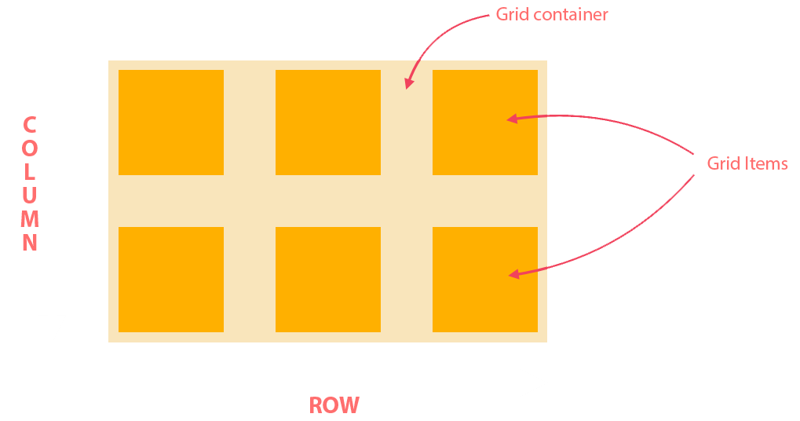

They work perfectly together:
1D layout => Use flexbox
2D layout => Use CSS Grid
display: grid

display: grid | inline-grid;
grid-template-columns
grid-template-rows
This properties can contain:
- track-size – can be a length, a percentage, or a fraction of the free space in the grid (using the fr unit)
- line-name – an arbitrary name of your choosing
grid-template-columns: [first] 40px [line2] auto 40px [end];
grid-template-rows: [row1-start] 25% [row1-end] auto [last-line];
grid-template-columns: repeat(3, 20px [col-start]);
grid-template-columns: 1fr 50px 1fr 1fr;
grid-template-areas
Defines a grid template by referencing the names of the grid areas which are specified with the grid-area property. Repeating the name of a grid area causes the content to span those cells. A period signifies an empty cell. The syntax itself provides a visualization of the structure of the grid.
.container {
display: grid;
grid-template-columns: 50px 50px 50px 50px;
grid-template-rows: auto;
grid-template-areas:
"header header header header"
"main main . sidebar"
"footer footer footer footer";
}

grid-template
grid-template =
grid-template-rows + grid-template-columns + grid-template-areas
grid-template:
[row1-start] "header header header" 25px [row1-end]
[row2-start] "footer footer footer" 25px [row2-end]
/ auto 50px auto;
grid-template-rows:
[row1-start] 25px [row1-end row2-start] 25px [row2-end];
grid-template-columns: auto 50px auto;
grid-template-areas:
"header header header"
"footer footer footer";
Gap
Specifies the size of the grid lines. Looks like setting the width of the gutters between the columns/rows.
/* standard notation*/
column-gap: ;
row-gap: ;
/* old notation*/
grid-column-gap: ;
grid-row-gap: ;
column-gap: 10px;
row-gap: 15px;
/* standard notation */
gap: grid-row-gap grid-column-gap;
/* old notation */
grid-gap: grid-row-gap grid-column-gap;
justify-items and align-items
This both value applies to all grid items inside the container.justify-items: start | end | center | stretch;
.container {
justify-items: center;
}align-items: start | end | center | stretch;
.container {
align-items: end;
}Example:
.container {
place-items: center;
}justify-content and align-content
If the total size of grid is less than the size of its grid container we can set the alignment of the grid within the grid container.
justify-content:
start | end | center | stretch |
space-around | space-between | space-evenly;
.container {
justify-content: space-around;
}
align-content: start | end | center | stretch
| space-around | space-between | space-evenly;
.container {
align-content: space-between;
}justify-self and align-self
This values applies to a grid item inside a single cell.
justify-self: start | end | center | stretch;
.item-a {
justify-self: start;
}
align-self: start | end | center | stretch;
.item-a {
align-self: stretch;
}All major browsers except Edge support the place-self shorthand property.